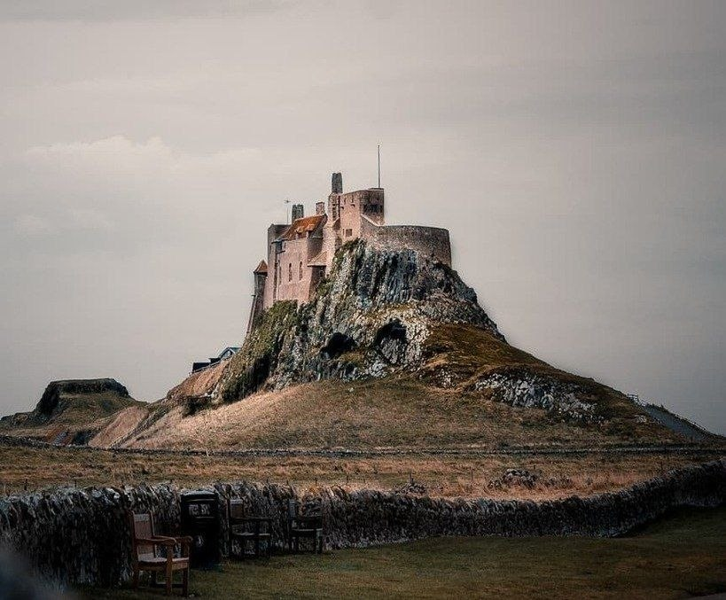
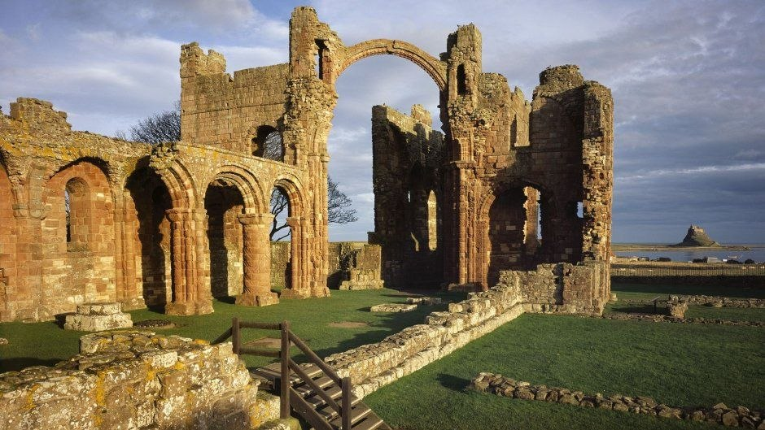
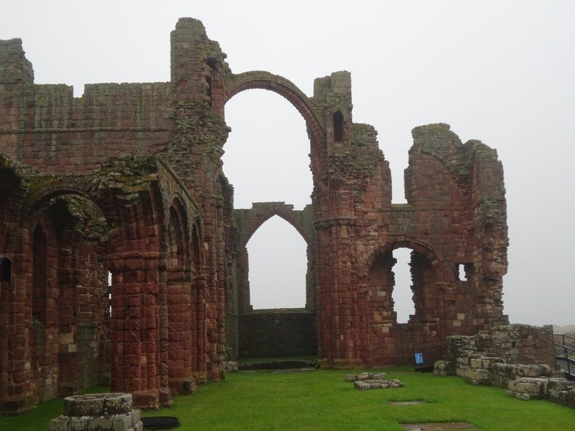

Линдисфарн, также известный как «Святой Остров» — приливный остров у северо-восточного побережья Англии, сыгравший ключевую роль в религиозной и военной истории Британии. Обитель, основанная здесь в VII веке, стала главным оплотом распространения христианства в англосаксонском королевстве Нортумбрия и духовным центром севера.
В историю европейской цивилизации Линдисфарн вошел не только благодаря культурным достижениям и просветительской деятельности монахов, но и как место первой разрушительной атаки скандинавских викингов в 793 году. Этот набег ознаменовал начало новой эпохи на континенте. Позднее, в XVI веке, на высоком вулканическом утесе острова возвели военную крепость, защищавшую английскую границу от нападений со стороны Шотландии.
Справочная информация
- Официальный объект: Lindisfarne Castle & Priory
- Географический статус: Приливный остров ( Holy Island )
- Дата основания монастыря: 635 год (епископ Айдан)
- Постройка замка: 1550–1572 годы (эпоха Тюдоров)
- Архитектура: Нормандская готика, тюдоровская фортификация, модерн
- Управляющие организации: English Heritage (аббатство) и National Trust (замок)
Природный режим: Затопляемая дамба
Связь Линдисфарна с материковой частью Англии осуществляется через песчаную дамбу протяженностью около 4 километров. Дважды в день во время морского прилива вода Северного моря полностью скрывает трассу, превращая сушу в изолированный остров.
График затопления меняется ежедневно в зависимости от лунного цикла. На перешейке оборудованы специальный спасательный укрытие на высоких сваях для путников, не рассчитавших время перехода и застигнутых водой.
Хроника острова: От религиозного центра до военной крепости
635 год — Основание монастыря и христианская миссия
Король Освальд Нортумбрийский призвал ирландского монаха Айдана из обители Иона для обращения местного населения в христианство. Айдан выбрал Линдисфарн благодаря его уединенности и близости к королевской резиденции в замке Бамборо. Монастырь стал центром епископства и ключевым институтом Кельтской церкви в регионе.
685–687 годы — Служение и культ Святого Кутберта
Епископом Линдисфарна становится Кутберт, чья праведная жизнь и деятельность проповедника завоевали огромный авторитет. После его смерти в 687 году и последующего вскрытия гробницы в 698 году его тело нашли нетленным. Линдисфарн превратился в крупнейший центр паломничества Британии, привлекавший правителей и верующих со всех англосаксонских королевств.
710–720 годы — Создание Евангелия из Линдисфарна
В монастырском скриптории епископ Еадфрит вручную создал иллюминированную рукопись Четвероевангелия. Это произведение стало вершиной островного искусства (Insular art), сочетающего кельтские, англосаксонские и средиземноморские орнаментальные мотивы. Рукопись до сих пор считается одним из главных шедевров средневекового книжного оформления.
8 июня 793 года — Набег викингов и разрушение обители
Флот скандинавских язычников внезапно атаковал беззащитный монастырь. Нападавшие разграбили храмовую казну, осквернили реликвии, сожгли постройки и уничтожили часть братии, а остальных забрали в плен. Это событие официально считается началом Эпохи викингов в Западной Европе.
875 год — Исход монахов и скитания реликвий
После регулярных повторных нападений датских викингов братия окончательно покинула Линдисфарн. Монахи забрали сокровища скриптория и раку с мощами Святого Кутберта. После более чем столетних скитаний по северной Англии мощи нашли постоянное упокоение в 995 году в основанном для них Даремском соборе.
1093 год — Нормандское возрождение (Приорат)
После нормандского завоевания Англии бенедиктинские монахи из Дарема заложили на месте древнего монастыря новое приоратство. Из местного красного песчаника были возведены массивная церковь и монастырские корпуса в суровом нормандском стиле, руины которых сохранились до наших дней.
1536–1570 годы — Тюдоровский форт и секуляризация
В ходе секуляризации монастырей Генрихом VIII приорат был упразднен. Камень разрушенной церкви использовали для строительства крепости на скале Беблоу-Крэг в 1550-х годах. Форт предназначался для защиты гавани от шотландцев и французского флота.
1715 год — Захват замка якобитами
Во время Якобитского восстания сторонники династии Стюартов — Ланселот и Марк Эрингтон — хитростью проникли в замок и захватили его от имени «Джеймса III». Однако правительственные войска из Бервика быстро отбили форт, а заговорщики бежали через подземелья.
1901 год — Реконструкция Эдвина Лаченса
Основатель журнала Country Life Эдвард Хадсон выкупил полуразрушенный замок и поручил его перестройку архитектору Эдвину Лаченсу. Форт был превращен в загородную резиденцию в стиле Arts and Crafts. Позже ландшафтный дизайнер Гертруда Джекилл разбила у подножия стен уединенный обнесенный стеной сад.


Свидетельства очевидцев: Трагедия 793 года
Нападение на Линдисфарн произвело шокирующее впечатление на христианский мир того времени. В письменных источниках атака описывалась как божье наказание и невиданная катастрофа.
«В этот год над землей Нортумбрии появились ужасные знамения, погрузившие людей в глубокий страх: то были небывалые порывы ветра и молнии, а в небе видомы были огненные драконы. Вскоре после этого язычники варварски разрушили церковь Божью в Линдисфарне насилием и кровопролитием».
«Никогда прежде Британия не ведала такого ужаса, какой постиг нас от языческого народа. Никто не помышлял, что столь внезапным может быть нападение с моря. Храм Святого Кутберта багров от крови иереев Божьих, лишен всех своих украшений и предан разграблению...»
Культурное наследие: Евангелие из Линдисфарна
Главным материальным памятником эпохи процветания монастыря является Евангелие из Линдисфарна (Lindisfarne Gospels) — манускрипт, созданный около 715–720 годов. Книга содержит тексты четырех Евангелий на латинском языке, написанные уникальным островным унциалом.
Особенность рукописи заключаются в так называемых «ковровых страницах» — сложных орнаментальных композициях, состоящих из переплетенных линий, изображений птиц и мифических животных. В X веке епископ Алдред добавил между строк латинского текста подстрочный перевод на староанглийский язык, что сделало этот манускрипт древнейшим сохранившимся переводом Евангелия на английский язык.
Хранение оригинала
Оригинал манускрипта находится в Британской библиотеке в Лондоне. В музее Линдисфарна представлена полная точная копия.
Бусины Святого Кутберта
Окаменелые элементы стеблей морских лилий (криноидей), которые выносит на берег острова после штормов, в народе называют «бусинами Кутберта». По преданию, дух святого по ночам выковывает их на наковальне во время бури.
Небесные знамения
Согласно средневековым хроникам, падению Линдисфарна предшествовали аномальные природные явления: сильные засухи, ураганные ветры и наблюдения в небе светящихся объектов, описанных монахами как «огненные драконы».
Заступничество гаг
Святой Кутберт во время уединения на соседнем острове Фарн установил первые в истории законы об охране птиц, взяв под защиту уток-гаг. На острове этих птиц до сих пор называют «Cuddy’s ducks» (утки Кутберта).
Эхо древних песнопений
Среди местных жителей существует поверье, что в туманную погоду возле разрушенных арок нормандского приората можно услышать тихое григорианское пение, доносящееся со стороны моря.
Современный статус и посещение
В настоящее время остров Линдисфарн является охраняемой исторической и природной территорией. Руины приората находятся под управлением государственного агентства English Heritage, а замок и прилегающий сад — под опекой благотворительного фонда National Trust.
Замок сохранил интерьеры, созданные Эдвином Лаченсом в начале XX века, включая дубовую мебель, камины и коллекцию антиквариата. В здании бывшего монастырского амбара функционирует музейная экспозиция, посвященная истории раннего христианства на севере Англии. Прибрежные марши острова входят в состав Национального природного заповедника, служащего местом зимовки редких видов перелетных птиц.